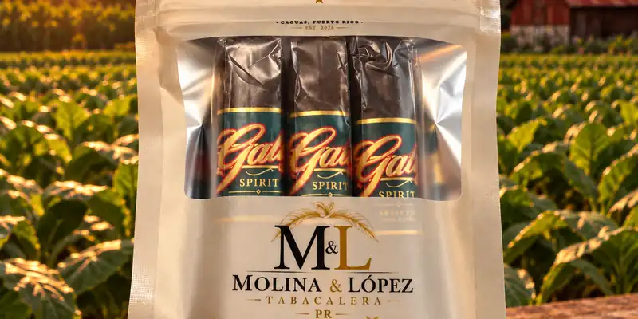

Galiz Spirit (Brown Sugar, Whisky, Ron Añejo)
De Molina & López Tabacalera · Caguas, Puerto Rico
Robusto con boquilla dulce saborizada; tabacos de Nicaragua y Ecuador. El Ron Añejo usa ron puertorriqueño. Desde $10.85.
- Vitolas: Robusto
Ver Galiz Spirit (Brown Sugar, Whisky, Ron Añejo) en la app, califícalo y guárdalo en Mi Hoja.